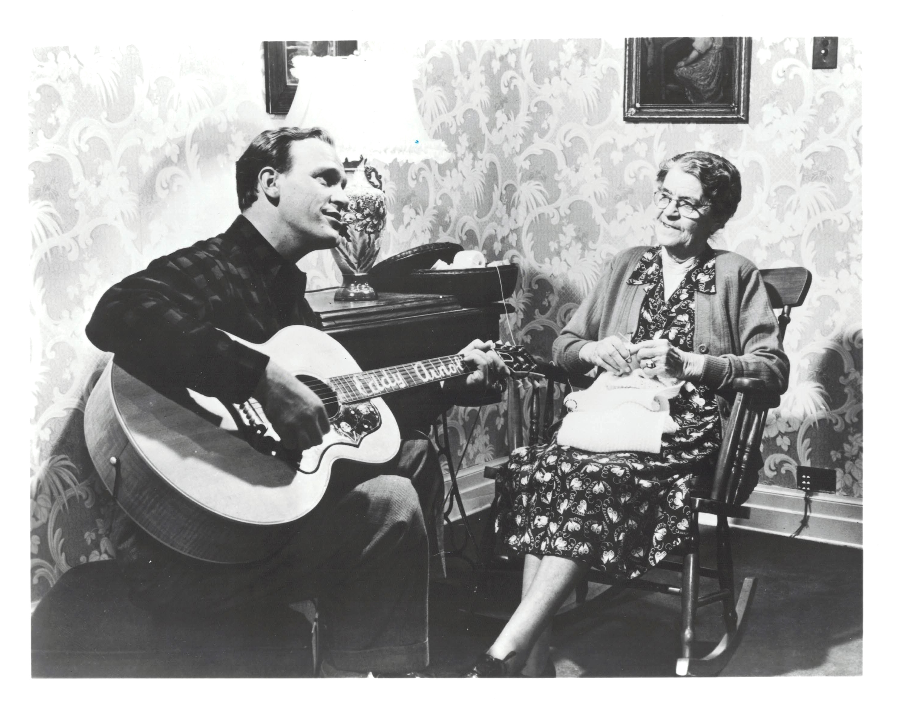

Product No. HEC-0047
$14.99
Shipping: $8.95
Description
8x10 B&W photograph
Full Description
Eddy Arnold (Deceased) was an American country music singer whose smooth vocal style helped bring country music to a wider popular audience. Born Richard Edward Arnold on May 15, 1918, near Henderson, Tennessee, he became one of the most successful recording artists in country music history. Nicknamed the "Tennessee Plowboy," Arnold first gained attention performing on radio before joining the "Grand Ole Opry." He became a major recording star during the 1940s and 1950s with songs including "Bouquet of Roses," "Anytime," "Make the World Go Away," "Cattle Call," and "I'll Hold You in My Heart." Arnold was especially important in the development of the polished "Nashville Sound," which blended traditional country music with pop-oriented arrangements, background vocals, and orchestration. His crossover appeal helped introduce country music to listeners who might not otherwise have followed the genre. Over his long career, Arnold placed an extraordinary number of songs on the country charts and sold millions of records. He was inducted into the Country Music Hall of Fame in 1966 and remained a respected figure in Nashville for decades. Eddy Arnold died on May 8, 2008, at age 89. His warm baritone voice, long list of hit recordings, and influence on the evolution of country music have made him an enduring figure among fans and collectors of classic country music, vintage records, photographs, and celebrity autographs.
Condition
Excellent condition